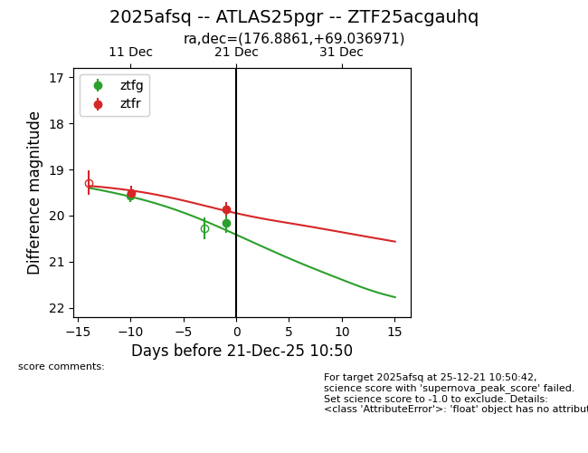
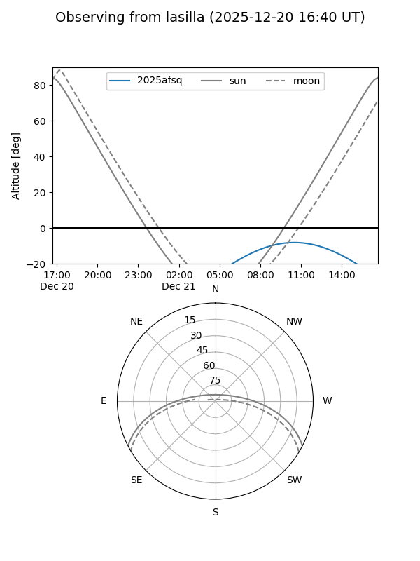
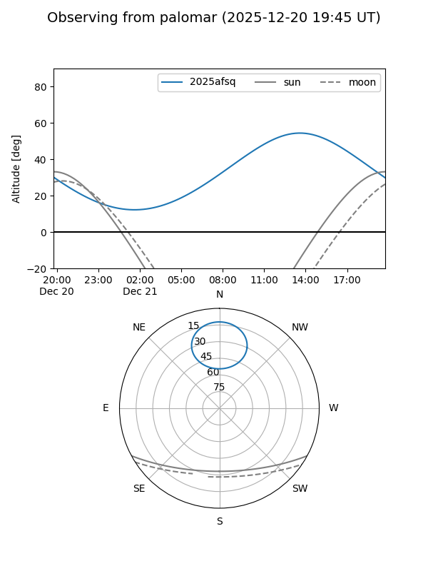
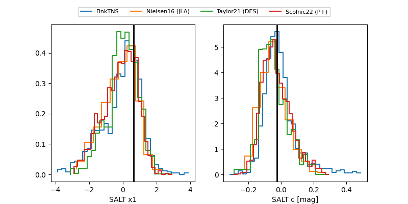

2025afsq
Target 2025afsq at 2025-12-20 13:49
Aliases and brokers:
FINK: fink-portal.org/ZTF25acgauhq
Lasair: lasair-ztf.lsst.ac.uk/objects/ZTF25acgauhq
ALeRCE: alerce.online/object/ZTF25acgauhq
TNS: wis-tns.org/object/2025afsq
YSE: ziggy.ucolick.org/yse/transient_detail/2025afsq
alt names
ZTF25acgauhq (ztf,fink_ztf)
2025afsq (tns,yse)
ATLAS25pgr (atlas)
Coordinates:
equatorial (ra, dec) = 176.8861,+69.03697
equatorial (HMS+DMS) = 11:47:32.67,+69:02:13.10
galactic (l, b) = (131.2396,+47.04727)
Flags:
Photometry:
last ztfg=20.16, ztfr=19.52
2 ztfg, 1 ztfr detections
Lightcurve

Visibility


Additional plots
